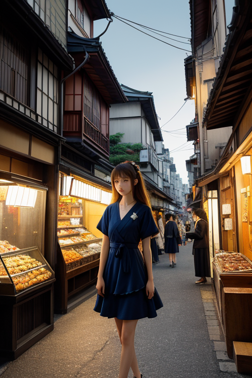
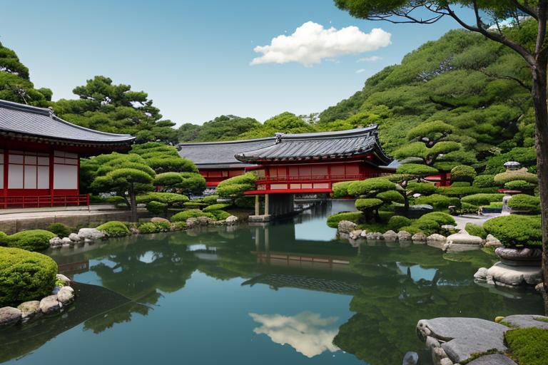

第一章 現実の神奈川
あなたはまだ気づいていない。この土地にも、王がいることを。
相模灘の青は、富士の雪と混ざり合い、湘南の空を曇りなき群青に染める。江ノ島の岩場に砕ける波は、遠い大陸からの気配を運び、横浜の埠頭では、異なる言語が潮風に溶け合う。ここは、海と陸、内と外、古いものと新しいものが絶えず接し、時に衝突する境界の地だ。鎌倉大仏は沈黙のまま、幾度の地響きを見届けてきた。その揺れは、時に歪みを孕む。
その歪みを、誰かが微かに調整している。波頭が建物をなぎ倒す寸前、ほんの一呼吸、遅らせる力が。地盤が軋むその時、震度を一段階、穏やかにする意志が。それは、港錨と交差波を紋章とする、一人の王の仕事である。彼の名はカナガリア・ノクス。混ざり合うことそのものを司り、この「歪みの列島」の一端を、静かに支えている。

第二章 歪みの兆候
横浜中華街の喧噪は、異なる言語と香料が渾然一体となった、濃密な空気を生んでいた。カナガリア・ノクスは、その混交のただ中に立っていた。彼の目には、人々の往来の奥に、目には見えない「境界」の線が幾重にも走っているのが見える。文化と文化、習慣と習慣が接するその線は、時に鋭く緊張し、微かな軋みを発する。これが、この土地に特有の「歪み」だった。
ペリーの黒船がもたらした開国の衝撃は、時を超えて地層に染み込み、外からの圧力が内側の均衡を揺さぶるたび、微かな亀裂が走る。ノクシアは彼の肩に止まり、ささやいた。「主君、港に新しい波が立ちます。異なるリズムが、土地の古いリズムとぶつかり合おうとしています」
王は群青色の瞳を細めた。混ざることは、新たなものを生む可能性でもあるが、その過程では必ず摩擦が生じる。その摩擦の熱が、時に予期せぬ歪みを膨らませる。彼は手のひらをかざした。掌から微かな金の光が拡がり、中華街の喧噪の中に潜む、いくつかの鋭すぎる「境界の線」をなぞるように撫でていった。線は鈍い光を帯び、少しだけ柔らかな輪郭へと変わった。衝突は消せない。だが、その衝撃を和らげ、次の一歩を踏み出せるほどの「間」を創り出すこと――それが、混交の王の役目だった。

第三章 王の葛藤
横浜中華街の喧噪を背に、王は三渓園の静寂に身を置いた。池の水面に映る古い茶室と、遠くに聳える横浜ベイブリッジ。異なる時間が一つの風景に混在するこの場所は、彼自身の内面を映していた。感情という名の異物が、彼の内に確かに宿り始めていた。寛容であるべき王の心に、時に「拒絶」の衝動が湧く。あまりに鋭い境界線、理解を拒む頑なさに触れた時、掌の光を消してしまいたいと、一瞬思うことがあった。
「混ざることで何を得る？」
問いは、彼の中で軋みを上げる。摩擦は熱を生み、時に痛みを伴う。箱根の山々を望む旧街道で、異国の文物が押し寄せた時の人々の戸惑いと、それでも歩み寄ろうとした痕跡を、彼は地層のように感じ取る。得るものは、安寧ではない。傷つき、傷つけ、それでも尚、新たな何かを紡ごうとする、やわらかくもろい「可能性」そのものだ。彼は、自らの中に芽生えた「拒みたい」という感情さえも、ひとつの異文化として認め、抱き留めることを学び始めていた。
第四章 妖精との対話
横浜中華街の路地裏。提灯の赤い光が舗石を濡らす夕刻、ノクシアは混交王の肩にふわりと座り、通り過ぎる人々の言葉の交響を聴いていた。
「出会いは、いつも別れの始まりですよ、王様」
彼女の声は、潮風に揺れる波の音のようだった。
「港は、船が来て、去っていく場所。文化も、人も、同じ。混ざり合う瞬間は、別れの予感を内包している。でもね」彼女は、老舗の窓から漏れるシュウマイの蒸気をそっと手繰り寄せた。「それが、この土地の『深み』になるんです。完全には溶け合わない。異物は異物のまま、少しずつ形を変え、地層のように積もっていく。三溪園の庭だって、和と洋が並置されているだけで、無理に融合はしていない」
混交王は、去りゆく船の汽笛を聞きながら問うた。「では、得るものは？」
「『選択肢』です」ノクシアは答えた。「混ざることで、失う純粋さの代わりに、増える組み合わせ。湘南の海がしらすを育むように、多様なものが交わる港は、新しい『在り方』の可能性を生み続ける。別れを知っているからこそ、出会いを慈しむ。それが、私たちの調整の本質です」
王は、自らの中に湧く寂しさの感情を、ひとつの「選択肢」として認めた。
第五章 微調整と余韻
三渓園の池に、一羽の渡り鳥が羽根を休めていた。遠い国から来て、また遠くへ去ってゆくその軌跡は、この地に流れる無数の人の道のようでもあった。
カナガリア・ノクスは、混ざり、別れ、また新たに混ざりゆく人々の気配を、港から吹く風に感じながら微調整を続けた。中華街の賑わいの奥に潜む郷愁、異国の船員が手にする家族の写真、湘南の海で波と戯れる無邪気な笑い声。彼はそれらが衝突せず、かといって均質にもならぬよう、ほんの少しの「間」と「緩やかさ」を仕込んでいく。それは、しらすが海の栄養を一身に受け止めるような、ごく自然な摂理の調整だ。
ある夕暮れ、彼はふと自問した。混ざることで得るものは。ノクシアの言う「選択肢」か。確かにそうだ。だが、それ以上に、彼は今、一つの確かな感情を抱いていた。それは、多様なものが交差するこの場所そのものへの、静かな愛着である。純粋さは失われても、代わりに生まれるのは、この複雑で豊かなハーモニーだった。
彼は群青色の外套を翻し、次の微調整へと歩み出した。港の灯りが、一つ、また一つと灯り始める時刻である。
あなたの町にも、王がいる。